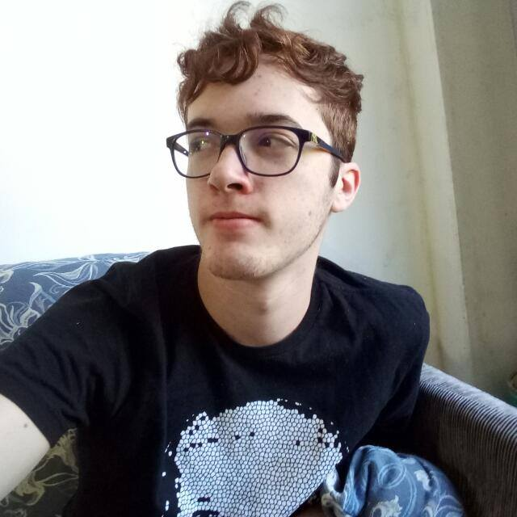

Eduardo Almeida de la Vega Van Gasse
Endereço: Rua Comendador Antônio Jannuzzi
Telefone: (24) 98118-5624
e-Mail: vsgaster@gmail.com
Idade: 17 anos (28/06/2000)
Perfil
Gosto de aprender coisas novas, tento lidar com os as situações o mais rapido possível, trabalho bem em grupo e sempre estou tentando inovar.
Experiencia Profissional
SEM EXPERIENCIA PROFISSIONAL
Formação
Bacharelado em Sistemas de Informação - (2018/atualmente)- conclusão prevista para 202
Operador de Suporte Técnico em Tecnologia da Informação - (2016/2017)
Ensino Médio - Completo (2015/2017)
Conquistas
2º Lugar na Olimpíada do Conhecimento Etapa Escolar - SENAI-RJ - Valença - RJ